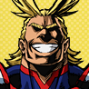

home
More info
Teacher Heros (strongest to weakest)
- All Might
- Endeavor
- Aizawa
Villans
- All for one
- Tomura
- Himiko
- Dabi
- Twice
- Overhaul
Character Description

- Izuku
- He was born quirkless. Through his hard work and detemination to help others, All might saw his potential as a great hero and passed on his own quirk to Izuku. Now Izuku is going to one of the greatest schools to become the worlds greatest hero.
- katsuki
- He is one of izukus childhood friends
- Ochaco
- Zero gravity
- Tenya
- Izukus new and good friend

- All Might
- His quirk (super power) is called One for All. He is the number one hero and the worlds symbol of peace.